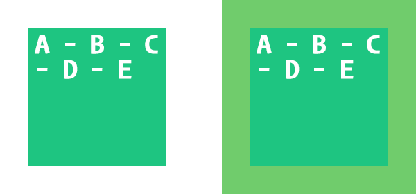

Une règle CSS est constituée d'un sélecteur CSS, d'accolades {…} et de tout ce qui se trouve entre elles.
Par exemple, voici une règle CSS simple:
Le sélecteur est ce qui se trouve avant l'accolade ouvrante.
Groupe de sélecteurs
Un groupe de sélecteurs est le nom donné lorsque plusieurs sélecteurs sont présents avant une accolade.
Par exemple:
Autrement dit, dans l’exemple précédent, le navigateur sélectionnerait en premier temps tous les paragraphes de la page. Ensuite, il ne garderait que ceux ayant un ancêtre possédant la classe .article.
Ancêtre
Le ou les ancêtres sont les sélecteurs séparés par un espace se trouvant à gauche du dernier sélecteur.
Par exemple :
La classe .intro est le parent
La classe .article est le grands-parents du paragraphe.
.intro et .article sont tous deux des ancêtres du paragraphe.
.article p { ... } sélectionenra tous les paragraphes à l’intérieur de l’élément avec la classe .article, même si .intro est omis.
Par exemple, le code suivant est une déclaration:
Bloc de déclaration.
Par exemple:
Chaque déclaration est constituée d'une propriété et d'une valeur.
La propriété padding définit l'espace entre le contenu et ses extrémités.
Par défaut, cette propriété à une valeur de 0.
Lorsqu'une seule valeur est fournie, celle-ci est appliquée aux 4 côtés de l'élément.
Par exemple:
Sous-propriétés
- padding-top
- padding-right
- padding-bottom
- padding-left
Par exemple:
Syntaxe courte
Ratio à partir de %
Le ratio se base toujours sur la largeur de l'élément.
Afin d'obtenir un format 16/9 il suffit de ramener la valeur de hauteur de cette fraction en pourcentage, soit 9 ÷ 16 x 100% = 56.25%.
Cet élément serait donc toujours dans un format 16/9, peu importe la largeur de son parent.
La propriété margin définit un espace vide devant être respecté autour d'un élément, bref une marge.
Par défaut, cette propriété à une valeur de 0 .
Lorsqu'une seule valeur est fournie, celle-ci est appliquée aux 4 côtés de l'élément.
Sous-propriétés de margin
- margin-top
- margin-right
- margin-bottom
- margin-left
Syntaxe courte pour margin
Syntaxe courte à deux valeurs
La première : la marge verticale ↕️ (top et bottom)
La deuxième : la marge horizontale ↔️ (left et right).
Alignement horizontal ↔️
Afin de centrer horizontalement ↔️ des éléments dans leurs parents.
Attribuer la valeur auto aux marges de gauche et de droite.
ERREUR FRÉQUENTE
Pour centrer horizontalement un élément avec la propriété margin et la valeur auto, un élément doit être en display: blockLa propriété background et ses différentes sous-propriétés permettent de contrôler l'apparence de l'arrière-plan d'un élément.
background-color
La propriété background-color permet de définir la couleur d'arrière-plan d'un élément.
background-image
La propriété background-image permet de définir une image d'arrière-plan à un élément. Elle accepte une ou plusieurs images et des fonctions permettant de générer un dégradé.
 se répête par défaut.
se répête par défaut.Dégradé
Il est possible de générer un dégradé à titre d'image d'arrière-plan en utilisant les fonctions CSS linear-gradient() et radial-gradient(). La première fonction génère un dégradé linéaire, tandis que la deuxième génère un dégradé circulaire.
Par exemple:
Combinaison
Il est possible de donner plus d'une valeur d'image d'arrière-plan. Pour ce faire, il est nécessaire de séparer chaque valeur avec une virgule.
Par exemple:
background-repeat
La propriété background-repeat définit la façon dont une image en arrière-plan est répétée. Cette valeur accepte plusieurs valeurs:
- repeat (par défaut)
- no-repeat
- repeat-x
- repeat-y
- Etc.
repeat vs no-repeat
À gauche, background-repeat: repeat; indique de répéter l'image d'arrière-plan aussi souvent que nécessaire afin de couvrir l'ensemble de l'élément.
À droite, background-repeat: no-repeat; indique au contraire de ne pas répéter l'image d'arrière-plan.
repeat-x vs repeat-y
À gauche, background-repeat: repeat-x; indique de répéter l'image d'arrière-plan sur l'axe des X uniquement ↔️.
Tandis qu'à droite, background-repeat: repeat-y; indique à l'opposé de répéter l'image d'arrière-plan sur l'axe des Y uniquement ↕️.
background-position
La propriété background-position permet de définir la position d'un arrière-plan. Il est possible de définir deux valeurs correspondant à la position X et Y dudit arrière-plan dans son élément. Ces valeurs peuvent-être n'importe quelle unité CSS (px, %, em, etc.), ainsi que certains mots-clés (top, bottom, left, right).
À gauche, background-position: 75% 25%; positionne l'arrière-plan à 75% horizontalement et 25% verticalement.
Tandis qu'à droite, background-position: center bottom; positionne l'arrière-plan au centre et au bas de son élément.
background-size
Par défaut, une image en arrière-plan affichera en fonction de sa dimension réelle. Cependant, la propriété background-size permet de contrôler la dimension de ladite image.
Il est possible de définir deux valeurs, correspondant à la largeur et la hauteur de l'arrière-plan utilisé.
Mots-clé
background-size accepte aussi des mots-clé.
background-size: contain; garde le ratio de l'image d'arrière-plan intact et redimensionne de sorte qu'elle soit entièrement visible dans l'élément. 🚫 rognage.
background-size: cover; garde aussi le ratio de l'image d'arrière-plan intact, mais la redimensionne de sorte que l'élément soit entièrement recouverte par elle. Quitte à rogner certaines parties de l'image.
Syntaxe courte
Est équivalent à:
Ordre d'affichage
L’élément apparaissant en premier dans le code sera aussi celui apparaissant en premier dans la page.
Affichage d'un élément de type bloc (block)
Sauf s'ils sont stylisés autrement, nativement, les éléments de type bloc tels que les balises <div>, <p>, <ul>, <li>, <article>, <section>, <header> etc., s'affichent un en dessous de l'autre dans la balise parent qui les contiennent.
Traduction libre de : 9.4.1 Block formatting contexts - W3C« Les éléments de type bloc sont disposés l'un après l'autre, verticalement, en débutant tout en haut de l'élément parent qui les contiennent. La distance verticale entre deux blocs voisins est déterminée par leur marges.
Pour chaque élément de type bloc, le côté gauche de l'élément touche le côté gauche de son parent. Même chose pour le côté droit. »
Affichage d'un élément de type en ligne (inline)
Sauf s'ils sont stylisés autrement, nativement, les éléments de type en ligne tels que les balises <span>, <em>, <strong>, <i> etc., s'affiche sur la même ligne que l'élément précédent ou suivant dans un flot horizontal.
Chaque élément possède une propriété display qui dicte son affichage.
Par exemple, les balises <div>, <p> ou <ul> prennent toute la largeur disponible et s'affichent l'une au-dessus de l'autre, car par défaut, leur propriété display est à block.
Tandis que les balises <span>, <img> ou <a> s'affichent l'une à la suite de l'autre, comme une suite de mots, car leur propriété display est à inline par défaut.
block
Les éléments display: block; en bref:
- Prennent toute la largeur disponible.
- S'affichent sur une nouvelle ligne.
(Logique puisqu'ils prennent toute la largeur) - Acceptent les propriétés width et height afin de définir la largeur et hauteur de l'élément.
- Peuvent contenir n'importe quel autre type d'éléments (block, inline, etc.).
inline
Les éléments display: inline; en bref:
- Prennent la largeur de ce qu'ils contiennent, sans plus.
- S'affichent un à côté de l'autre, comme des mots dans une phrase, tant qu'il y a de l'espace et change de ligne au besoin.
- N'acceptent pas les propriétés width, height, margin-top et margin-bottom.
- Peuvent contenir d'autres éléments inline, mais pas block.
inline-block
Les éléments en display: inline-block; sont en quelque sorte des hybrides entre inline et block.
Par exemple, les balises <button>, <select> ou <input> s'affichent l'une à la suite de l'autre, mais peuvent avoir une largeur et une hauteur (width/height) de définies, car leur propriété display est à inline-block par défaut.
- Ne prennent que la largeur de ce qu'ils contiennent par défaut, mais acceptent les propriétés width, height, margin-top et margin-bottom.
- S'affichent un à côté de l'autre.
(Logique puisqu'ils prennent uniquement la largeur de leur contenu)
none
Parfois il est préférable de ne pas afficher un élément.
Par exemple, un "popup" ne devrait pas être affiché tant qu'un utilisateur n'a pas déclenché un évènement. D'où l'utilité de la propriété display: none; indiquant au navigateur de faire abstraction d'un élément.
Deux éléments affichés côte à côte
Deux éléments inline ou inline-block
Utiliser la propriété CSS vertical-align afin de spécifier comment ces éléments doivent s’afficher l’un par rapport à l’autre.
Valeurs disponibles:
- baseline aligne avec la ligne de base
- top ⬆️ aligne en haut
- middle aligne au centre
- bottom ⬇️ aligne vers le bas
- super équivalent d'un exposant
- sub équivalent d'un indice
Comme il est mentionné à la rubrique Le flux natif de la page HTML, le flux normal aussi appelé “flow” en anglais, est la façon dont les éléments sont affichés dans une page web lorsqu’aucun style ne leur est appliqué.
Dans le flux normal, les éléments block (div, p, section, etc.) sont positionnés un à la suite de l’autre.
Les éléments inline (span, strong, em, etc.), sont positionnés un à côté de l’autre en fonction de leur ordre d’apparition dans le code HTML.
Être ou ne pas être dans le flux
Lire cet article à propos du flux natif de la page Être ou ne pas être dans le fluxPosition: static
Par défaut, le navigateur attribue la position static à tous les éléments.
Position: relative
Les éléments en position: relative; se positionnent d'abord en fonction du flux normal de la page. Ils sont ensuite déplacés relativement à cet emplacement, d'où leur nom position: relative;.
Position: absolute
Les éléments en position: absolute; ignorent complètement le flux de la page et se positionnent en fonction du parent le plus près aillant une position autre que static.
Position: fixed
Les éléments en position: fixed; ressemblent aux éléments en position absolute. Tout comme eux, ils ignorent le flux de la page. Cependant, plutôt que de se positionner en fonction d'un parent, ils se positionnent en fonction de la fenêtre (viewport).
Position: sticky
Les éléments en position: sticky; ressemblent aux éléments en position static. Tout comme eux, ils se positionnent d'abord en fonction du flux normal de la page. Cependant, lorsqu'une de leurs propriétés top, right, bottom ou left correspond au défilement de la page, l'élément devient fixe.
Absolues
Les unités absolues gardent leurs dimensions, peu importe leur contexte. Ces unités sont pratiques pour des éléments que l'on souhaite immuables.
Les pixels (px) sont l'unité absolue la plus répandue, ce qui fait du sens puisque la majorité des codes CSS sont écrits pour gérer l'affichage sur un écran. Néanmoins, il existe plusieurs autres valeurs absolues:
- cm - Centimètres
- mm - Millimètres
- in - Pouces
Relatives
Contrairement aux unités absolues, les unités relatives se basent sur la dimension d'un parent pour déterminer leur dimension, ce qui les rend particulièrement utiles pour créer un site web responsive.
- % - Relatif au parent
- em - Relatif à la taille fonte courante
- rem - Relatif à la taille à la racine du document <html>
Quand utiliser quelle unité?
Voici quelques exemples où une unité est préférable à une autre.
%
Pour qu'un élément prenne la moitié de la largeur de son parent, peu importe la largeur du parent en question.
em
Pour qu'un texte ayant la classe .small ait une taille équivalente à la moitié du texte courant, peu importe la taille du texte courant.
rem
Pour que nos éléments de titre affichent toujours de la même taille, soit 2x celle de notre texte de base, peu importe la taille du texte courant.
color
font-family
La propriété font-family permet de spécifier la police de caractères pour afficher du texte dans un élément.
Cette propriété accepte le nom d'une police:
Ou encore une liste de polices:
Cette dernière possibilité présente deux avantages:
font-weight
La propriété font-weight permet de définir la graisse d'un texte.
Par exemple:
Plusieurs graisses sont généralement disponibles. Ces graisses peuvent être spécifiées via leur valeur numérique ou encore leur nom.
| NUMÉRIQUE | NOM |
|---|---|
| 100 | thin |
| 200 | extra light |
| 300 | light |
| 400 | normal |
| 500 | medium |
| 600 | semi-bold |
| 700 | bold |
| 800 | extra bold |
| 900 | black |
Par défaut, si aucune graisse n'est spécifiée, le texte est en normal (400).
font-size
La propriété font-size permet de définir la taille du texte.
Par défaut, si aucune taille n'est spécifiée, la majorité des navigateurs lui attribueront la taille de 16px.
Bien que les px soient très répandus, il ne faut pas sous-estimer les avantages offerts par les rem et em.
font-style
La propriété font-style permet de définir si un texte devrait apparaitre en italique ou non, grâce aux valeurs:
- normal (par défaut)
- italic
line-height
Par exemple:
Définit une hauteur de ligne de 24px si la taille de texte est de 16px, puisque: 16px * 1.5 = 24px.
Généralement, un line-height de base est définie sur la balise <body>. Ainsi il affecte tous les éléments de la page.
letter-spacing
La propriété letter-spacing permet de spécifier l'espacement entre chacune des lettres d'un texte.
Par exemple:
Si la taille de texte est de 16px, puisque: 16px * 0.5em = 8px, un espace de 8px sera ajouté entre chaque lettre.
Plusieurs propriétés CSS permettent de contrôler l'apparence d'un texte. Voici quelques-unes des propriétés les plus courantes.
text-align
La propriété text-align, détermine l'alignement horizontal du texte.
- left (par défaut)
- right
- center
- justify
text-decoration
La propriété text-decoration permet d'ajouter ou de retirer une ligne à un texte.
Cette propriété accepte plusieurs arguments, tel que le type de ligne, sa couleur et son style.
text-transform
La propriété text-transform permet de modifier un texte.
- none n'a aucun impact (par défaut).
- lowercase transforme le texte en minuscules.
- uppercase transforme le texte en majuscules.
- capitalize transform en majuscule la première lettre de chaque mot.
text-stroke
La propriété -webkit-text-stroke bien que non standard, d'où sont préfix -webkit, est supportée par tous les navigateurs majeurs. Cette propriété accepte deux valeurs. L'épaisseur du trait entourant le le texte et la couleur du trait en question.
ERREUR FRÉQUENTE
Lorsque le prefix -webkit est oublié, l’effet ne s’affiche pas.text-shadow
La propriété text-shadow permet d'ajouter une ombre à un texte. Un décalage sur les X ou Y afin d'être visible par défaut. Une 3e valeur pour spécifier le niveau de flou souhaité pour l'ombre. Finalement, une 4e valeur permet d'indiquer la couleur de l'ombre.
Il est possible d'ajouter plusieurs ombres à un même texte si désiré en séparant chaque ombre par une virgule.
Par exemple:
Les propriétés width et height permettent de définir respectivement la largeur et la hauteur d'un élément. Par défaut leur valeur est à auto.
min-width & min-height
Les propriétés min-width et min-height permettent de définir une largeur et une hauteur minimum à un élément.
Puisque min-width a préséance sur width, l'élément adoptera alors sa largeur.
max-width & max-height
Les propriétés max-width et max-height permettent de définir une largeur et une hauteur maximale à un élément.
Puisque max-width a préséance sur width, l'élément adoptera alors sa largeur.
La propriété border a une vocation principalement esthétique, permettant d'ajouter une bordure à un élément.
border-width
La sous-propriété border-width permet de définir la taille de la bordure.
border-style
Comme son nom l'indique, cette propriété permet de définir le style de la bordure.
Styles disponibles:
- none (par défaut)
- solid ligne standard (plus commun)
- dotted pointillé
- dashed hachuré
- double double ligne
- groove bordure 3D donnant l'impression que le bordure a été gravée
- ridge bordure 3D donnant l'impression que la bordure ressort
- inset bordure 3D donnant l'impression que l'élément est enfoncé
- outset bordure 3D donnant l'impression que l'élément ressort
border-color
Permets de définir la couleur de la bordure.
Syntaxe courte
border-radius
Permets de définir des coins arrondis sur un élément.
Contrôle des coins individuellement
- border-top-left-radius
- border-top-right-radius
- border-bottom-right-radius
- border-bottom-left-radius
Ou encore de spécifier les multiples valeurs à même la propriété. Les coins sont spécifiés dans le sens des aiguilles d'une montre ⌚️ en commençant à partir du coin supérieur gauche.
Par exemple:
En CSS, chaque élément constituant une page est une boîte rectangulaire
Qu’il s’agisse d’un texte, d'une image ou encore de n’importe quel autre élément, une boîte rectangulaire l’englobe toujours. Ce concept est appelé le Box model 📦.
La boite en CSS est constituée de 4 parties:
- Le contenu la zone de base définie par le texte/image ou encore le width et le height.
- La marge intérieure padding l’espace vide entre le contenu et sa bordure.
- La bordure border la bordure entourant l’élément.
- La marge extérieure margin l’espace entre la boîte et celles à proximité.
Pour obtenir la dimension réelle de l'élément, il faut ajouter la marge intérieure (padding) et la bordure (border).
Par exemple, si le contenu d'un élément a une largeur 200px et une marge intérieure (padding) de 50px, sa dimension réelle est donc de 300px.
| Valeur | Propriété |
|---|---|
| 200px | width |
| 50px | padding-left |
| 50px | padding-right |
| 300px | Total |
La propriété background-image accepte la fonction linear-gradient(). Comme son nom l'indique, celle-ci permet de définir un dégradé.
Orientation
Par défaut, les dégradés sont verticaux.
- to top
- to right
- to bottom (par défaut)
- to left
Pour créer des dégradés diagonaux, il est possible de spécifier une deuxième direction dans le mot-clé.
Par exemple:
- to top left
- to top right
- to bottom left
- to bottom right
Degrés
Il est aussi possible de spécifier une rotation en termes de degrés pour plus de précision.
Serait l'équivalent de to right.
Points d'arrêt
Par défaut, lorsqu'aucun point d'arrêt n'est spécifié, les couleurs sont distribuées de façon égale.
Par exemple un dégradé à trois couleurs, sans point d'arrêt, donc égales.
0 à 50% vert vers le bleu
50% à 100% de bleu vers le rouge.
Définir un point d'arrêt après une couleur afin de spécifier à partir de quel point cette couleur doit commencer à fusionner avec la suivante.
La propriété box-sizing permet de spécifier si la marge intérieure (padding) et la bordure (border) d'un élément doivent compter dans sa dimension réelle.
content-box
Est la valeur par défaut attribué à la propriété box-sizing.
Par défaut, tous les éléments d'une page utilisent ce box-model.
Évite que l'espace alloué au contenu change de dimension lorsqu'une marge intérieure (padding) ou une bordure (border) lui est ajoutée.
 À gauche, sans padding.À droite, avec un padding de 40px.
border-box
Ce mode sert à donner priorité à la dimension réelle de la boite.
Évite qu'elle change de dimension lorsqu'une marge intérieure (padding) ou une bordure (border) lui est ajoutée.
 À gauche, sans padding.
À gauche, sans padding.À droite, avec un padding de 40px.
border-box est particulièrement utile lorsque des éléments ont une dimension en %.
box-sizing: content-box, la taille réelle de cette boite dépasserait celle de la fenêtre.
Créant ainsi une barre de défilement horizontale et une mise en page quelque peu étrange.
box-sizing: border-box, puisque les marges intérieures (padding) sont comptées à même la largeur totale, la boite prend toute la largeur de la fenêtre, sans pour autant dépasser la fenêtre.
Bon conseil.
De nos jours, la majorité des développeurs convertissent toutes les boites de leurs pages en border-box via le code suivant placé en début de feuille CSS:
Ceci permet de simplifier la réalisation de mises en page.
Je vous conseille donc de toujours débuter vos feuilles de style avec cette ligne !La propriété float permet à un élément de flotter à gauche ⬅️ ou à droite ➡️ à l'intérieur de son conteneur. Elle permet aussi au texte et aux autres éléments en ligne (inline) le suivant de s'enrouler autour de lui.
Valeurs disponibles:
- none (par défaut) l'élément ne flotte pas
- left l'élément flotte à gauche ⬅️
- right l'élément flotte à droite ➡️
Par exemple:
Impact sur le display
Pour que le contenu en ligne soit en mesure de s'enrouler autour de l'élément en float, il est nécessaire de pouvoir calculer sa dimension.
Puisqu'il est impossible par défaut de calculer la dimension (width & height) des éléments en ligne (inline), ceux-ci sont automatiquement convertis en display: block; dès que la propriété float leur est attribuée.
La propriété opacity permet de gérer l'opacité d'un élément. Une valeur de 0 correspond à une transparence complète, tandis qu'une valeur de 1 correspond à une opacité complète.
La propriété opacity affecte l'ensemble de l'élément (incluant son contenu) et de ses enfants.
Par défaut, le flux de la page, page flow, fait en sorte qu'une balise HTML se positionne toujours par-dessus celles qui la précède.
Ainsi, dans le cas où deux balises se superposent, celle apparaissant en dernier dans le code affichera par-dessus la première.
On peut modifier l'ordre d'empilement des balises en spécifiant une valeur de z-index.
Contexte d'empilement
Les éléments partageant un même parent peuvent être déplacés en avant ou en arrière les uns des autres grâce à z-index, c'est ce que l'on appelle le contexte d'empilement.
La propriété box-shadow permet d'ajouter une ombre à un élément.
Une ombre nécessite d'être décalée de son parent.
Il faut lui attribuer une valeur de décalage sur les X, les Y ou les deux.
Couleur
Pour spécifier la couleur d'ombrage, il suffit d'ajouter une unité de couleur à la fin.
Flou
Il est possible de la flouter grâce à une 3e valeur insérée avant la couleur.
Étendu
En ajoutant une 4e valeur, il est possible d'augmenter/diminuer la taille d'une ombre afin que sa dimension ne soit pas identique à celle de son élément référent.
Direction
Par défaut, les ombres sont projetées vers l'extérieur de leurs éléments.
Il est possible de changer la direction des ombres afin qu'elles soient projetées vers l'intérieur de leurs éléments, créant ainsi une illusion de profondeur.
Pour ce faire, il faut ajouter le mot-clé inset comme premier argument au box-shadow.